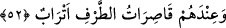
51. Onlar koltuklara yaslanıp kurularak orada birçok meyveler ve içecekler
isterler.
“Onlar koltuklara yaslanıp kurularak…” (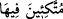) ifâdesi, bir önceki âyette geçen (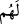)’den hâl olup mânâsı, zevk u safâ içerisinde bulunanların oturuşuna benzer tarzda
“koltuklara yaslanıp kurularak” rahat rahat oturmak demektir.
“Koltuklara yaslanıp kurulma” ifâdesi, hiç şüphesiz zevk u safâ içinde olduklarını
göstermektedir. Cenâb-ı Hak, daha sonra onların cennetteki durumlarını beyân etmeye
başlayıp şöyle buyuruyor:
“Orada birçok meyveler ve” birçok da “içecekler isterler.” “Meyva” anlamına gelen
(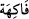) kelimesi, gıda almak için değil, zevk almak için yenen yiyeceklerdir. Burada
sadece meyva istedikleri zikredilmek sûretiyle cennetliklere âid yiyeceklerin gıda
almak maksadına değil, sırf zevk u safâyâ mâtuf olduğu bildirilmiş oluyor. Çünkü
gıdalar vücuddan atılan şeylerin yerine bedel olarak alınır. Oysa burada vücuddan
birşey atılmamaktadır.
(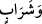) ifâdesinin (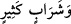) şeklinde olmakla birlikte meyva ile ilgili olarak (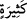)
lâfzının zikredilmesi ile yetinilerek hazfedildiği söylenmiştir ki buna göre ifâde “ve
birçok da içecek çeşidi isterler” anlamına gelmiş olur.
Denir ki: Kur’an-ı Kerim cennetlerle ilgili olarak on tane içecekten söz etmiştir:
Irmaklardan akan ve kaynaklardan çıkan şarap (hamr) bunlardan biridir. Bal, süt vb. de
bu içeceklerdendir. Şurası muhakkaktır ki, dünyadaki mânevî zevkler çeşit çeşit
olduğundan dolayı bunun bir gereği olarak ister içeceklerle ilgili olsun ister başka
şeylerle ilgili olsun cennetteki tecellîler de çeşit çeşit olmaktadır.
52. Yanlarında, eşlerinden başkasına bakmayan, kendilerine yaşıt güzeller vardır.
Bu muttakîlerin “yanlarında, eşlerinden başkasına” kesinlikle “bakmayan,” yâni
bakışları sadece eşlerine olan “kendilerine yaşıt güzeller vardır.” Ya’nî, kocalarından
başkasına bakmayan kadınlar vardır.
Keşfü’l-esrâr’da der ki: Bu ifâde tıpkı ‘falan kadın falancanın yanındadır’ ifâdesine
benzemektedir ki bu ‘falan falancanın karısıdır’ anlamındadır.
(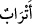) kelimesi (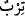) lâfzının çoğulu olup “tirb”, (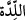) yâni “seninle birlikte doğmuş”
yaşıt demektir. Bu kelimenin sonundaki “he” ( ) harfi, kelimenin başından gitmiş bulunan
) harfi, kelimenin başından gitmiş bulunan
( )’ın yerine getirilmiştir. Çünkü kelime, (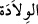) kökündendir. Mânâ, beraber doğup
)’ın yerine getirilmiştir. Çünkü kelime, (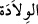) kökündendir. Mânâ, beraber doğup
büyümüş yaşıt akranlar, şeklindedir. Birbirlerine denk olduklarını belirtmek, “kaburga
kemiği” anlamındaki “terîbe”lerinin birbirlerinin terîbelerine benzediğini göstermek;
ayrıca toprağa birlikte düştüklerini yâni türâb’ın kendilerine aynı anda değdiğini ifâde